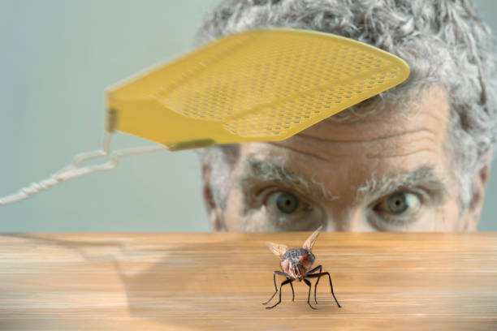

Lab 14: Debugging Tools & Strategies

Challenge
The challenge of this lab was to debug past labs.
Problems
This one was very easy! I haven't had too much trouble getting labs to work, and when I did, I was able to push through and get them working before the project deadline. Because of that, I didn't have any projects to debug for this lab.
Reflection
This was a nice lab to have this week. Since the team prototype is due this week, I have been busy with that. Being able to go back and reflect on past labs and fix them if necessary is a nice change of pace.
Debugging


I got all my labs working properly so there is no need for debugging! I tried to answer some questions on stackoverflow.com but all the questions were above my pay grade.